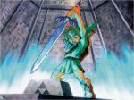

Forums galactiques > Assemblée Galactique : diplomatie officielle > Nettoyage de système
| revan Respect diplomatique : 1671  02/07 ETU 00:50  | Score : 1 Détails edit: dsl , sa à mit 2 fois le post
/ne pas voter celui là merci de votre comprehension / | ||
| revan Respect diplomatique : 1671 02/07 ETU 00:51 | Score : 1 Détails Bonjour tout le monde
ou plutot bonsoir J'annonce que le 987 va etre nettoyer de la presence de Kyle E , qui s'amuse à m'attaquer le PC1 serra ionisé dans 48h, vous avez encore une chance d'evacuer dans les regles | ||
| Blackwarrior Respect diplomatique : 476  02/07 ETU 16:11 | Score : 1 Détails RAPPEL
il vous reste exactement 42 heures pour quitter le système 730, qui sera ionisé par mes soins afin de le fermer... plusieurs salves de tirs seront tirées! Je ne rembourserai aucun vaisseau, car j'estime avoir prévenu largement à l'avance... Si exeption est, envoyez moi un MP dans les plus brefs delais, et je verrai ce que je peu faire... attention: dans 42h, les missiles toucheront le système, et non pas seront lancés... | ||
| DarkDevil Respect diplomatique : 569  03/07 ETU 02:13 | Score : 0 Détails ALERTE ALERTE
Je vais nétoyer Le système 684 Merci d'évacuer les comandant concerner sont : _Némésis _Albert Simon _Moi (lol!!) Ionisation prévue dans 1 semaine donc Lundi 10 !!!!!! | ||
| Kyle Emagan Respect diplomatique : 1309  03/07 ETU 02:28 | Score : 0 Détails Tiens, tu m'as donné envie de prévenir tout le monde!
Attention, Attention... La majeure partie des systèmes portant l'embleme Bleu "Emagan" verront leurs Point de Coordonée 1 netoyés ioniquement... Les tirs souffleront toutes les flottes présentes dans moins de 12 heures... Essayez de deplacer vos flottes avant si vous voulez croire à un quelconque miracle désespéré... Ou sinon préparez la calculette pour compter les morceaux. Bon calculs! La compagnie de sécurité Emagienne espere que vous avez passé un bon séjour dans nos systèmes, et vous souhaite bon vent. A la prochaine! | ||
| Cesco Imperator Respect diplomatique : 3122  03/07 ETU 08:28 | Score : 0 Détails Etant donné qu'un invité non souhaité s'est positionné dans beaucoup de mes systèmes, et dans différents PC de même sysème, je n'ai pas le choix, et suis obligé d'ouvrir le feu sans sommation.
Désolé pour les dommages collatéraux, mais les gens présents dans mes systèmes n'étaient pas obligé d'y être...étant donné que je me protège des invasions à venir, je ne rembourserais rien. | ||
| Blackwarrior Respect diplomatique : 476 03/07 ETU 10:35 | Score : 1 Détails Bon, j'ai constaté que personne n'était parti de mon système, et que même d'autres commandants étaient venus, et aucun MP à ce sujet. J'en déclare donc que ces commandants ne veulent pas partir, et je lance les ionisations ce soir vers 20h
PS: Rappel: le système visé est le 730 | ||
| khalim Respect diplomatique : 488  03/07 ETU 13:19 | Score : 0 Détails Insultant!
Sans aucun respect! Albert Simon, vous êtes plus têtu qu'un âne! Maintenant et pour empêcher toutes incursions, je serai plus précis: LE SYSTÈME 459 EST INTERDIT D'ENTRÉE À TOUTES PERSONNES N'AYANT PAS REÇU L'AUTORISATION PRÉALABLE D'Y ALLER. Des ionisations ont été lancées, j'espère que ce seront les dernières. N'oubliez pas: Le 459 est une propriété privée! Aimeriez-vous qu'un inconnu entre n'importe quand dans votre maison, sans même ne serait-ce que dire bonjour? ========================= voici comment je veux voir les demandes de visite: Nombre de vaisseaux Raison de la présence des vaisseaux Croyez-vous qu'héberger ces vaisseaux puisse être un danger pour la sécurité de ce système? | ||
| Albert Simon Respect diplomatique : 1777 03/07 ETU 13:40 | Score : 2 Détails Commandant,
Vous faites des rapprochements hors de propos, vous etes en train d'interdire de passer devant chez vous. Ce n'est pas parceque vous occupez tous les logements de la rue, que la rue est a vous. De plus surveillez votre langage, cette complainte commence a me fatiguer tres serieusement, surtout venant d'un tigre de papier. Vous passez votre temps a abattre mes vaisseaux (non armés soit dit en passant), et en plus vous hurlez au scandale. C'est le monde a l'envers. Ai je protesté pour la ionisation de mes vaisseaux ? Non. Vous ai je attaqué ? Non vous ai je manque de respect ? quoi que vous en disiez, non Une fois de plus laissez moi faire mon travail, et faites le votre un peu mieux en cessant notamment ces attaques inoportunes, injustes et calomnieuses. Cessez de faire le petit roquet et alors nous pourrons en parler en privé, je suis a votre service. Cordialement Albert Ps: de plus vous avez raison indiquez bien a tout le monde un systeme ou vous possedez toutes les planetes -le 459 - pour ceux qui ne savent pas ...... | ||
| khalim Respect diplomatique : 488 03/07 ETU 13:59 | Score : 1 Détails Vous passez devant chez moi?
Non! Vous roulez sur mes plate-bandes! le 458 et le 460 pourraient être considérées comme "devant chez moi" Je vous le rappelle, le système 459 est fermé à tout ceux qui y entrent sans me le demander. Vous y êtes revenu sans même m'avertir, alors que vous saviez très bien que j'avais fermé mon système. Un simple MP, et je vous aurais laissé travailler en paix. Maintenant, d'autres ionisations sont en routes, et un MP vous aurait permis de sauver les vies de vos hommes. Je n'ai personnellement rien contre vous, Monsieur Simon, mais je tiens à la souveraineté de la fédération. Pigeon et Sether sont déja venus dans mon système et, bien que je ne pense pas à vous en disant cela, je ne souhaite pas devoir recommencer. Si vous vouliez des renseignements sur mes systèmes, vous n'aviez qu'à m'envoyer un MP. Je vous fais confiance, vous m'avez l'air honnête. Têtu, mais honnête. Le tigre de papier vous salue tout de même. PS: de 1: Je ne suis l'ennemi de personne, je suis à 100% neutre. donc pas vraiment de chances d'être attaqué pour des raisons politiques, de plus je suis assez connu pour demander de l'aide si le besoin se fait sentir. de 2:Je n'aurais pas posté ceci si je n'étais pas certain à 100% de mes droits sur ce système. de 3: Je suis navré si mes paroles vous ont été désobligeantes, mais j'ai écrit ceci sous le coup de la colère et de la stupéfaction. | ||
| Albert Simon Respect diplomatique : 1777 03/07 ETU 14:05 | Score : 1 Détails Je n'irais pas plus loin dans la polemique publique sur ce sujet, en MP si vous le souhaitez.
Pour infos, mes fregates cartographiques sont automatiques. Donc pas d'hommes a bord, je n'ai aucune envie de risquer la vie de mes collaborateurs en les envoyant dans des contrées peuplées d'indigenes agressifs (ce qui n'est bien sur pas votre cas, mais qui peut arriver ailleurs). Albert | ||
| khalim Respect diplomatique : 488 03/07 ETU 14:34 | Score : 1 Détails Bien, le problème est finalement réglé pour moi.
| ||
| DarkDevil Respect diplomatique : 569 04/07 ETU 17:42 | Score : 1 Détails Système 772 fermer toute intrusion sera nétoyer!!!
| ||
| Roi Liche Respect diplomatique : 23  04/07 ETU 17:54 | Score : 2 Détails System 15 fermer, toute intrusion 2000 ioniques vont écraser les flottes de l'intru avec ma nouvelle technique de tir.
| ||
| Zelda Respect diplomatique : -37  04/07 ETU 17:55 | Score : -7 Détails Eh bien si vous entrez dans mon système c'est que vous êtes le plus fort de la galaxie !!
Car il est fermé ... | ||
| Albert Simon Respect diplomatique : 1777 04/07 ETU 18:24 | Score : 0 Détails Zelda vous avez decidé de pourrir tout les sujets de l'assemblée ?
Vous n'etes pas au bar du coin, vous etes a la tribune de l'assemblée, et independamment du fait que vous etes ridicule, votre prise de parole doit etre un peu plus travaillée, surtout si vous n'avez rien a dire. | ||
| Naruse Respect diplomatique : 1178  06/07 ETU 12:28 | Score : 0 Détails Bon les ioniques pour nettoyer le 752 étant en partance, c'est au tour du 764.
Je demande, donc que toutes les troupes naviguant dans ce système, le quitte au plus vite. Les Commandants concernés recevront un X-com d'ici quelques minutes. Si quelqu'un est concerné est qu'il n'en aurait pas reçu qu'il me contact. (un oubli peut arriver) Et les gagnants sont (comprendre ici les Commandants concernés): - Némésis - Vladimir Harkonnen - Général Straken - Khalim - Sombrecoeur - y0 - Albert Simon - Valdisa - Alanom - Herdac - Cougor Les Commandants sus-nommés ont quatre jours à décompter de demain midi (un message leurs sera envoyé à cette heure) pour quitter le système. C'est à dire que les premières ioniques seront lancés le lundi 10 à 12h00 ETU. J'annonce également, qu'après nettoyage du système, toutes flottes se présentant au PC 1, sans raison, et demande seront anihilées sans aucun message de prévention. Bien entendu toutes demandes de remboursements passées ce délai seront déclarées irrecevables. Pourquoi de telles mesures? Je l'ai déjà expliqué. Merci de votre (in)attention. | ||
| Wolverine Respect diplomatique : 2271  06/07 ETU 12:40 | Score : 5 Détails Commandants, Commandantes, Diplomates et autres formes de vie
J'ai oublié de prévenir d'un truc cette noble Assemblée. A 11H00 hier, les forces d'assaut du Commandant Ragnarok ont lancé des attaques sur les vingt planètes d'un système genoshien. Sur les 20 attaques, 19 ont raté. 6 heures plus tard, les Troupes d'Assaut Rapides Mutantes ont repris d'assaut cette planète perdue. Dans le même temps, le Commandement des Forces Stratégiques Mutantes a déclenché l'Opération "Tempête Galactique". Des tirs d'ogives hyperatomiques ont donc touché les systèmes contrôlés par le Commandant Ragnarok. L'objectif est d'enlever l'envie d'attaquer à ce Commandant. A ce jour, les Forces Conventionnelles Mutantes n'ont lancé aucune opération offensive contre ce Commandant. Nous souhaitons en rester là. Merci de votre attention. | ||
| ahahahahah Respect diplomatique : 11  12/07 ETU 19:39 | Score : 3 Détails Systeme 1051 Fermer prier de ne pas venir !!
| ||
| -[Aerÿnn]- Respect diplomatique : 2661  12/07 ETU 20:43 | Score : 1 Détails --Hologramme depuis Flÿnna--
Communiqué : Général en chef de la garde Flÿnnaenne "Bonsoir à tous, Une simple annonce et qui n'a pas de limite dans la durée : Des ionisations régulières sont et seront encore effectuées sur les systèmes Flÿnnaens. Dans le cas d'un manque de temps, je ne peux prévenir tout le monde. Aussi, je vous prierais d'être compréhensifs. Normalement et sans distraction, je vous préviendrai au préalable. Mais personne n'est parfait. Donc si vous tenez vraiment à être remboursé, nous le ferons. Mais considérant qu'une cartographie n'a besoin d'un seul vaisseau (chasseur, croiseur, frégate ou cla peu importe) théoriquement, nous vous rembourserons CE vaisseau, venant de nos hangars. Par contre inutile de m'envoyer une plus grosse facture. En effet, si je vois des pertes en CLA et/ou frégates, faites une croix dessus. Avouez vous-même que vous n'allez pas envoyer vos cartographes à bord de centaines (de milliers peut-être) vaisseaux de guerre prêts à prendre quelques planètes ou tout le système... Merci de votre attention... Général Hétag Pour Flÿnna" --Fin de transmission-- |
Forums galactiques > Assemblée Galactique : diplomatie officielle > Nettoyage de système